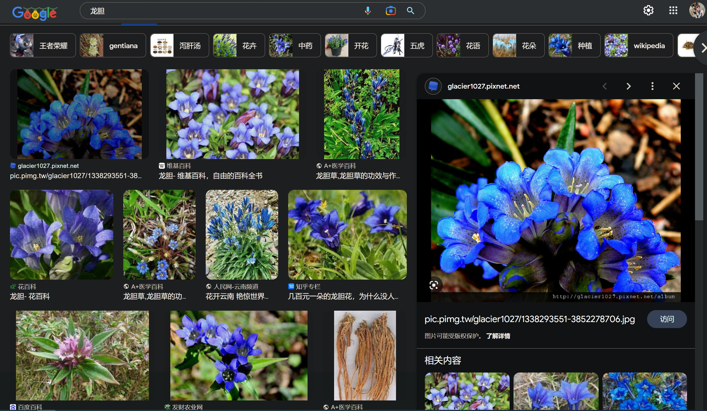

龙胆原型
这是一篇普通的博客.

#龙胆
###龙胆（学名：Gentiana scabra）为龙胆科龙胆属的植物，也称为龙胆草（植物名实图考）、胆草、草龙胆、山龙胆。
形态
多年生草本。卵形至披针形叶子对生，有1或3条主脉；秋季开蓝紫色花，聚伞花序顶生。
命名
龙胆草的英文名称为gentian，得名于公元前2世纪亚德里亚海东岸的一个古国伊利里亚的国王Gentius，据古罗马作家老普林尼记载，是Gentius首先将龙胆入药。从远古时候起欧洲就已经将黄龙胆的根茎作药用。
分布
分布在俄罗斯、日本、朝鲜以及中国大陆的贵州、湖北、吉林、浙江、湖南、福建、辽宁、陕西、广西、江苏、内蒙古、广东、黑龙江、安徽等地，生长于海拔400米至1,700米的地区，常生长在山坡草地、路边、灌丛中、河滩、林缘及林下，目前尚未由人工引种栽培。
All articles in this blog are licensed under CC BY-NC-SA 4.0 unless stating additionally.